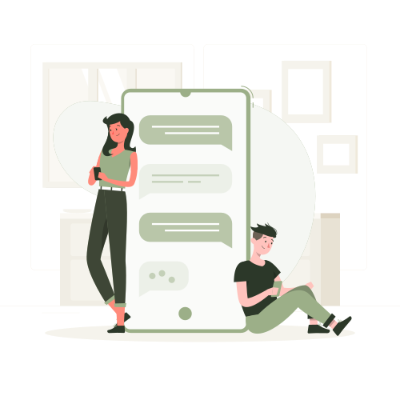
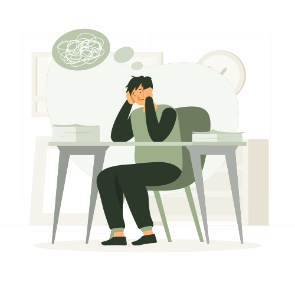
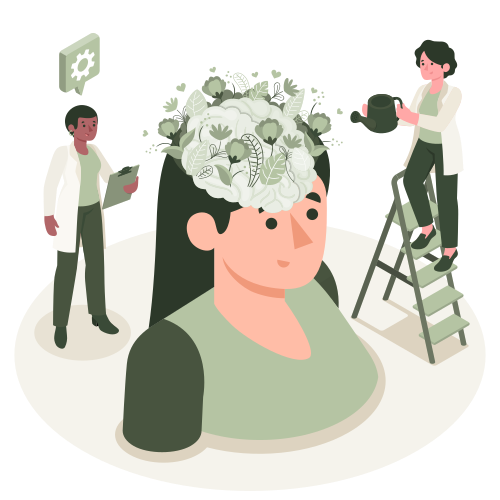

Layanan kami
Pendampingan yang menyesuaikan kebutuhanmu.
Setiap layanan dirancang untuk membantumu mengenali, memahami, dan memulihkan kondisi emosional secara bertahap.
Setiap layanan dirancang untuk membantumu mengenali, memahami, dan memulihkan kondisi emosional secara bertahap.

Tahap awal untuk mengidentifikasi kondisi emosional dominan, memahami kebutuhanmu, dan menentukan pendekatan healing yang sesuai. Dilakukan lewat Google Form, pertanyaan reflektif, dan komunikasi awal bersama admin.

Sesi refleksi emosional terarah bersama pendamping. Mulai dari membangun kenyamanan, eksplorasi perasaan, refleksi diri, hingga menemukan insight & coping strategy sederhana.

Pendampingan lanjutan setelah sesi utama untuk memantau perkembangan, memberi dukungan emosional ringan, dan menjaga keberlanjutan proses healing-mu.

Latihan untuk melatih komunikasi asertif, mengekspresikan emosi secara sehat, memahami respon emosional diri, dan meningkatkan kemampuan komunikasi interpersonal.
Fleksibel sesuai kenyamananmu.
Jawab 10 pertanyaan singkat untuk melihat refleksi awal kondisi emosionalmu. Sekitar 3 menit — dan tidak ada jawaban yang salah.
Check-up ini mengeksplorasi 4 kondisi emosional yang paling sering dirasakan:

Pikiran berputar, susah berhenti

Energi habis, semangat nol

Bingung mau ke mana, ngerasa hilang

Pertemanan, keluarga, atau hubungan yang berat
Ilustrasi oleh Storyset
Kunjungi Instagram Feel & Heal
Klik link landing page di bio Instagram
Menghubungi admin
Mengisi emotional check-up
Menentukan jadwal sesi
Mengikuti guided healing session
Mendapatkan follow-up support
Siap mengambil langkah pertama? Kami menemani.